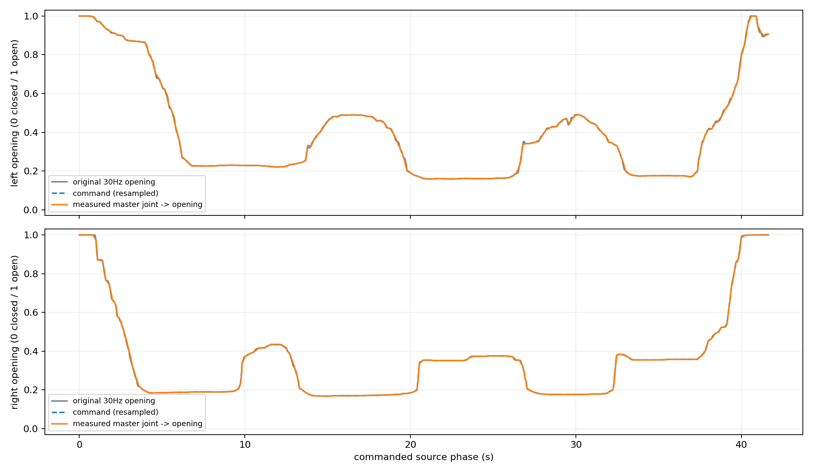
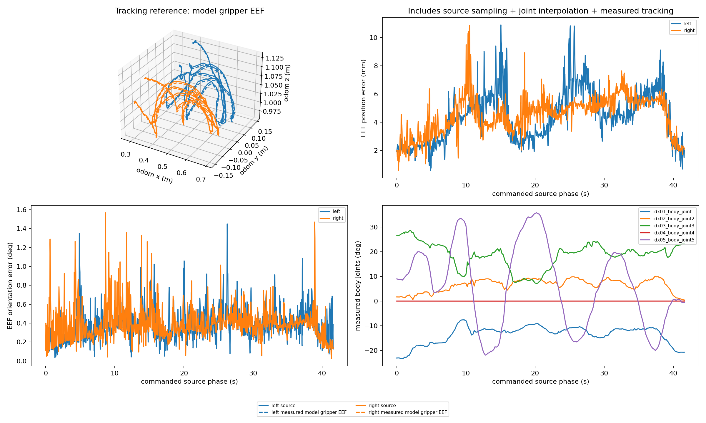
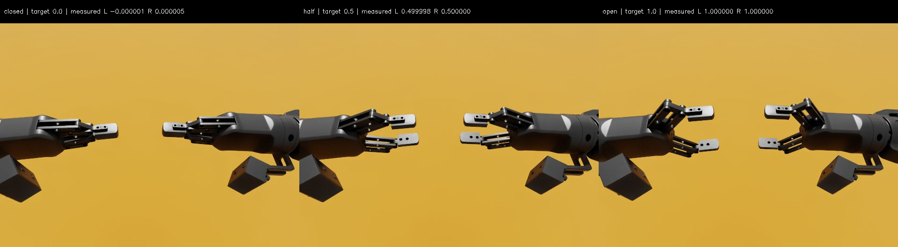
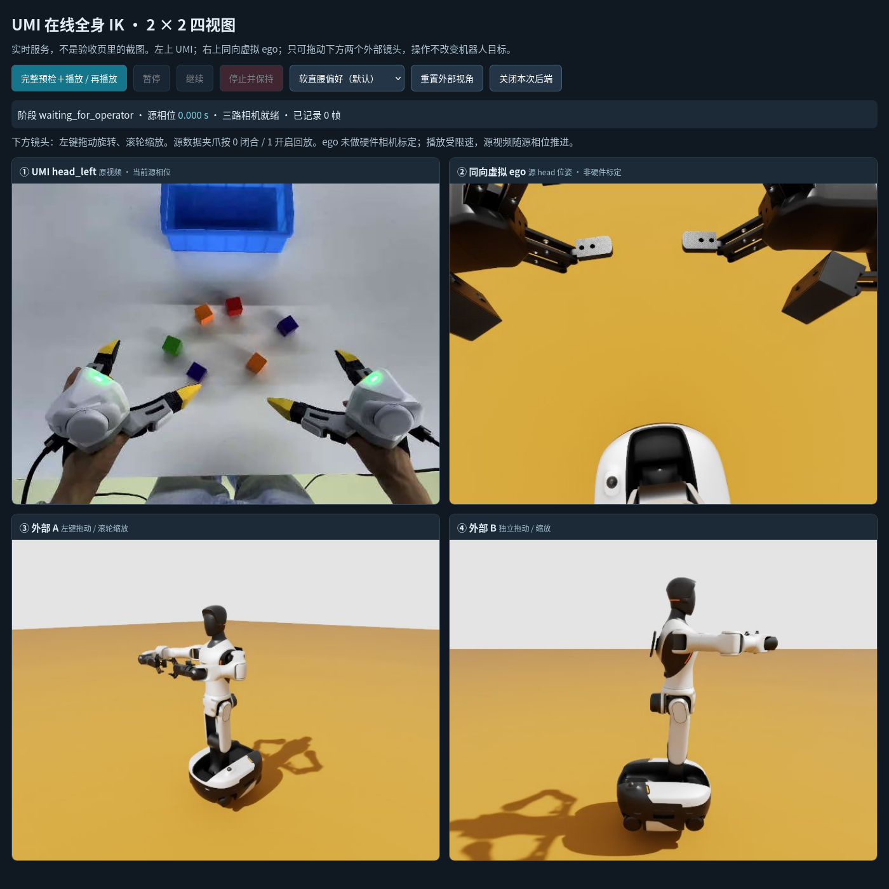
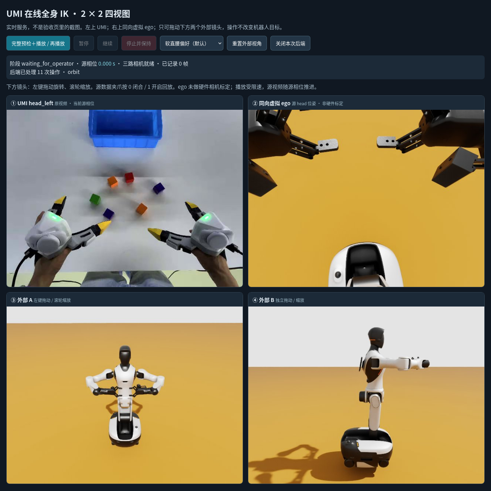
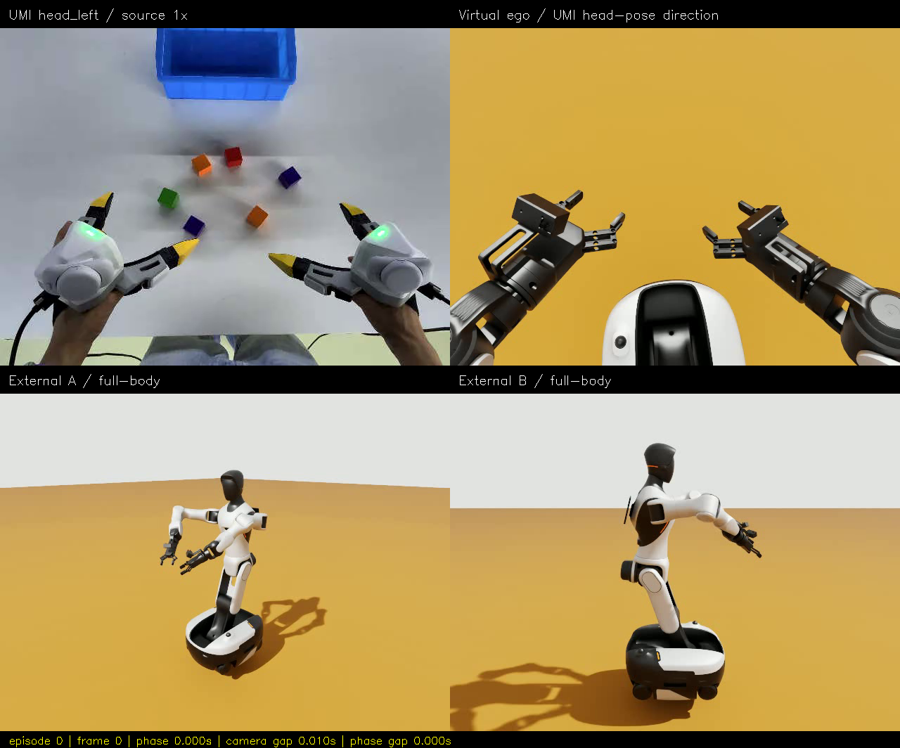
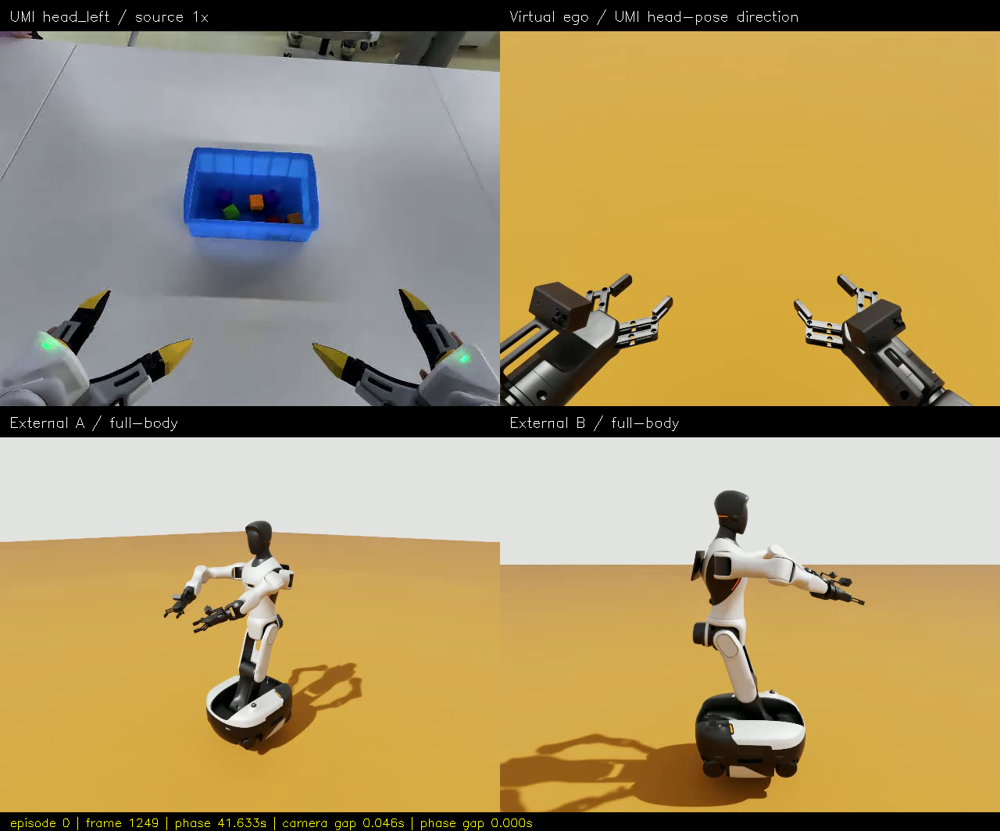

UMI → G2 · v4：开合＋真实 Web 交互
2026-10-15 · 固定底盘 · 双臂＋腰部＋夹爪 · 动态指尖 TCP · 0 闭合 / 1 开启
本页是离线验收资料，截图不能点击/拖动。
真正的在线控制：在仓库根目录运行
真正的在线控制：在仓库根目录运行
mamba activate xense-wbc，接受 EULA 后执行 bash wbc_demo/run.sh umi-web，再打开 在线控制台。一个文件里的 2 × 2 四视角
左上原始 UMI；右上同向虚拟 ego；下方两个外部镜头。1,250 帧 / 30 fps / 41.666667 s，按源相位重定时，非机器人原速。视频与图片都在本目录内，可整体复制后离线观看。
完整验收记录 · 修复原理与启动说明 · 来源与 SHA256 · 直接播放 MP4
| 实际检查 | 结果 |
|---|---|
| 预检、回放、回家 | 228/228，通过；回放段 933.970 s |
| 原始 EEF 位置误差，左 / 右 | 最大 10.895 / 10.845 mm；P95 7.146 / 6.259 mm |
| 归一化开度对原始数据最大误差 | 左 0.01824 / 右 0.02094 |
| 腰部侧倾 / 底盘漂移 | 最大 roll 0.01876°，平移 1.228 μm |
| 真实鼠标 / 滚轮 / 按钮 | 拖动、缩放、重置、播放、暂停、继续通过；暂停相位变化 0 s |
| 实际全闭 / 半开 / 全开 | 0、0.5、1 均通过；仅允许同一夹爪两指垫的预期接触 |
指尖 EEF 与开度实际跟踪


全闭、半开、全开补测

全闭 q=-0.91 时网格有约 0.195 mm 指垫交叠；SRDF 仅新增左右各一对指垫允许接触，不关闭其他碰撞。该策略在整段源轨迹通过之后加入，0 端点独立补测。完整说明见 README。
真实鼠标拖动前 / 后


由 Firefox WebDriver BiDi 原生输入完成，不是合成 DOM 点击或直接 API 代替按钮。原生图片拖拽已禁用，实时页显示后端操作计数、连接状态与渲染新鲜度。
源首帧 / 末帧


源：TacVerse/xtac-umi-g1-block-to-box，CC-BY-SA-4.0；含源画面的图片/视频进行了缩放与拼接。虚拟 ego 未标定光学内外参；空场景不代表抓取成功。本页可离线观看，但不能控制仿真。